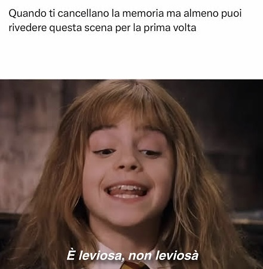
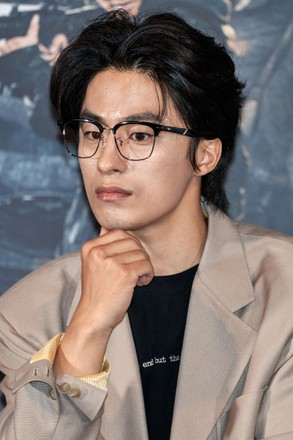

Film · Showbox 2025 · Remake di Us and Them (2018)
Once We Were Us
Una storia d'amore che non cerca colpevoli. Il che è molto più crudele.
Negli ultimi mesi sui social sta spopolando tra i cinefili un trend che trovo sorprendentemente sincero. “Quando ti cancellano la memoria, ma almeno puoi riguardare questa scena per la prima volta.”
Il trend nasce dalla nostalgia che le opere ci lasciano addosso quando le finiamo, spesso accompagnata da un piccolo disagio — l’impossibilità di fare pagina bianca, di ricominciare da zero e assistere ancora una volta, senza difese, alla trasformazione che hanno prodotto in noi.
Anch’io mi sono chiesto più volte quale film o serie mi convincerebbe a cancellare i miei ricordi pur di poterlo rivivere da capo. E, a essere sincero, non so nemmeno se saprei rispondere senza risultare prevedibile: le mie ossessioni, ormai, le conoscete già.

Eppure, in un certo senso, Kim Do-young mi ha fatto un regalo inatteso. Mi ha dato la possibilità di riavvicinarmi a un film che diversi anni fa ho amato profondamente attraverso qualcosa di tanto inaspettato quanto irresistibile: il suo remake coreano.
Once We Were Us (titolo originale: 만약에 우리, manyage uri, che potremmo tradurre letteralmente come "E se noi") è il remake sudcoreano del film romantico cinese Us and Them (2018) di Rene Liu — una delle storie d'amore più seguite in Asia negli ultimi anni. La versione coreana, affidata alla regista Kim Do-young (già autrice di Kim Ji-young, Born 1982), porta lo stesso impianto narrativo dentro un vocabolario emotivo specificamente coreano: orgoglio maschile, pudore femminile, la vergogna del fallimento economico come forza invisibile che governa l'intimità. Il risultato è un film che sulla carta somiglia a molti altri, ma che sotto la superficie fa qualcosa di più onesto e doloroso della maggior parte di essi.
Sebbene ogni film possieda una propria autonomia, una propria dignità narrativa, e merita di essere guardato per ciò che tenta di essere, sapere che Once We Were Us affonda le mani in un’opera che a suo tempo mi incantò e mi lasciò addosso un’inquietudine persistente rende inevitabile un certo grado di analisi comparata. Il confronto, in fondo, è quasi cercato dal film stesso: riuscirà a restituire quella stessa potenza emotiva e visiva? O magari a trovare una voce abbastanza personale da emanciparsi dal modello, persino superandolo in alcuni momenti?
Cercherò di non trasformare tutto in una sorta di tifo calcistico. Ma sarebbe disonesto fingere neutralità assoluta: la mia ammirazione per Koo Kyo-hwan mi rende inevitabilmente predisposto nei confronti del progetto — senza che questo tolga nulla alla straordinaria intensità del protagonista cinese dell’originale, già memorabile in Better Days (2019).
Di certo, Once We Were Us non parte svantaggiato. Non sarà mai una “prima volta” nel senso puro del termine. Ma forse può avvicinarsi abbastanza da riaprire quella ferita emotiva da un’altra angolazione.
Il cast principale



Sceneggiatura: amare nel momento sbagliato
Scena chiave
L'autobus di Capodanno
La prima volta che si siedono l'uno accanto all'altra. Eun-ho disegna il ritratto di Jeong-won di nascosto.
Scena chiave
Eun-ho spalanca la finestra
Il simbolo visivo più efficace del film: lui tira la tenda e lascia entrare nella stanza un'ondata di luce illuminando il viso di Jeong-won.
Scena chiave
Il treno che lei prende sola
Eun-ho sale sul treno. Lui non la segue, anche se potrebbe. Entrambi sanno che se lo facesse, lei resterebbe. È forse la scena più onesta del film: a volte si lascia andare qualcuno non perché non si voglia trattenerlo, ma perché non lo si può fare.
Scena chiave
La stanza d'albergo (epilogo)
Il presente: il volo è fermo, loro sono insieme in una stanza. Non succede nulla di definitivo. Non deve. Certe storie non hanno una seconda possibilità — hanno solo un momento in cui finalmente ci si guarda davvero.
La struttura narrativa di Once We Were Us ricalca quasi perfettamente Us and Them ed è quella del racconto a ritroso: il film apre nel presente — un aereo bloccato a terra, due ex che si ritrovano seduti vicini — e costruisce il passato attraverso flashback estesi, lunghi, densi di dettagli. È una scelta che conosce i suoi rischi: il presente rischia di diventare una cornice inerte, un semplice contenitore per le scene del passato. Kim Do-young evita questa trappola facendo del presente qualcosa di altrettanto carico: ogni volta che torniamo all'aereo, siamo un po' più consapevoli di quanto peso i due personaggi stiano portando nei loro corpi.
La cosa più coraggiosa che la sceneggiatura fa — e che la distingue da quasi tutte le storie d'amore coreane degli ultimi anni — è rifiutarsi di assegnare una colpa. Eun-ho e Jeong-won non si lasciano perché qualcuno ha mentito, o ha tradito, o è rimasto intrappolato in un equivoco da drama. Si lasciano perché lui non è ancora pronto per essere la persona di cui lei ha bisogno che lui sia. Perché lei sa di meritare qualcosa che lui non le sta dando. Il film non giudica nessuno dei due — e questo lo rende, paradossalmente, molto più doloroso di qualsiasi colpo di scena melodrammatico.
"Ci siamo conosciuti troppo presto. O forse troppo tardi. Non lo so. So solo che in quel momento non riuscivo a essere quello che volevi." — Eun-ho [PLACEHOLDER — dialogo da verificare]
Quello che la sceneggiatura gestisce con meno sicurezza è la Seoul del 2008. Il film sfiora il contesto sociale senza mai affondare davvero: la precarietà economica di Eun-ho, la sua vergogna per il fallimento professionale, il peso della cosiddetta sampo generation — quella generazione che ha rinunciato a relazioni stabili, casa di proprietà e famiglia non per indifferenza, ma per necessità — sono elementi presenti, ma trattati per allusioni. Il film cinese originale li usava come struttura portante; il remake coreano li arretra a sfondo. È una scelta comprensibile, ma lascia a tratti la sensazione di guardare una storia d'amore privata del suo contesto più potente.
Quello che rende la scrittura davvero efficace è la sua fiducia nei dettagli fisici. Kim Do-young eredita dal film originale la tendenza a fare degli oggetti dei veri e propri personaggi secondari: il ventilatore, la luce del sole, il divano su cui lui dorme mentre lei è distante, il ritratto che lui ha disegnato su un autobus anni prima. Ogni oggetto accumula significato nel corso del film senza che il dialogo debba mai spiegarlo. Quando torna, è già denso di storia.
Recitazione: due corpi che parlano lingue diverse
Per chi ha seguito Koo Kyo-hwan negli ultimi anni — il villain algido di D.P., il personaggio spezzato di Decision to Leave — vederlo qui in un ruolo romantico potrebbe sembrare un salto. È un salto, ma nella direzione giusta. Eun-ho è goffo, caloroso, rumoroso, pieno di difetti che lui non vede o che preferisce non nominare. Koo Kyo-hwan lo abita con una generosità fisica che non avevo mai visto in lui: c'è qualcosa di quasi infantile nel suo modo di occupare lo spazio nelle scene del passato, come di un uomo che non ha ancora imparato a fare i conti con i propri limiti.
È poi curioso ritrovarlo qui — per la terza volta — insieme a Kang Mal-geum (la moglie di Gyeong-se in We Are All Trying Here) e a partire da quest'anno anche nel cast di quella stessa serie. Il cinema coreano contemporaneo è un villaggio piccolo, e Koo Kyo-hwan ne è diventato uno degli abitanti più inamovibili.

Moon Ga-young fa qualcosa di più difficile: costruisce un personaggio che trattiene quasi tutto. Jeong-won sorride spesso, ascolta, cede. La sua resistenza non è mai urlata. È una forma di self-preservation silenziosa, il tipo di autodifesa che si impara a padroneggiare quando si è capito che esprimere un bisogno è più rischioso che tenerlo dentro. Moon Ga-young lavora con gli occhi e con le pause — c'è un momento in cui Jeong-won guarda Eun-ho che dorme, e il film resta su di lei per qualche secondo di troppo, quasi a volerle lasciare il tempo di decidere cosa fare di quello che sente. Non decide nulla. E la sua immobilità in quel momento è più eloquente di qualsiasi dialogo.
"Anche se ci lasciamo, incontriamoci ogni tanto. Non voglio perdere anche il posto sicuro." — Jeong-won [PLACEHOLDER — dialogo da verificare]
La chimica tra i due funziona proprio perché non è mai troppo leggera. Nelle scene del passato c'è calore, c'è ironia, c'è la specifica goffaggine dei due corpi che ancora non sanno bene dove mettersi l'uno rispetto all'altro. Ma c'è sempre, anche nelle sequenze più luminose, qualcosa che non quadra del tutto — un lieve disallineamento nel ritmo, una risposta che arriva un secondo in ritardo.Kim Do-young pianta i semi della rottura fin dall'inizio, e i due attori le lasciano fare, senza mai smettere di sembrare innamorati.
Regia e Fotografia: colori come memoria
La scelta più discussa del film — e a mio avviso la più riuscita — è quella cromatica. Il passato è caldo, saturo, quasi eccessivamente luminoso: le scene del 2008 hanno la qualità di una fotografia tenuta troppo a lungo nel portafogli, i bordi un po' consumati ma i colori ancora vivi. Il presente, quello dell'aereo e della stanza d'albergo, è desaturato, quasi in bianco e nero. È una convenzione visiva che il cinema usa spesso — probabilmente fin troppo — ma Kim Do-young le dà una motivazione precisa che il film rivela solo tardi, e che trasforma quella che sembrava una scelta estetica decorativa in qualcosa di emotivamente necessario. Non voglio dire altro per non togliere la sorpresa a chi non ha ancora visto il film.
Quello che convince di più nella regia è la gestione del tempo nelle scene del passato. Kim Do-young non ha fretta. Lascia che le sequenze domestiche si allunghino, che i silenzi abbiano il loro peso specifico, che la macchina da presa indugi sui corpi che stanno nello stesso appartamento senza davvero stare insieme. C'è una grammatica spaziale molto precisa: quando la relazione è al suo meglio, i due personaggi condividono sempre lo stesso quadro, spesso si toccano, si sovrappongono. Man mano che qualcosa si incrina, la regia comincia a separarli — inquadrature diverse, corpi che non si cercano più, lo spazio tra loro che cresce senza che nessuno lo dichiari.

Il punto debole della regia è forse il finale. Il film potrebbe concludersi in almeno tre momenti diversi, e Kim Do-young sceglie di andare avanti ogni volta — aggiungendo una scena, poi un'altra, poi ancora una. C'è probabilmente la paura di lasciare lo spettatore senza una risposta chiara, ma quella paura fa perdere al film qualcosa di prezioso: la capacità di restare sospeso, di lasciare che il finale fosse — come la relazione stessa — incompleto e onesto. La coda finale si sente come una concessione al genere, un passo indietro rispetto alla maturità che il resto del film aveva mostrato.
Ho guardato Us and Them originale qualche anno fa, in una di quelle serate in cui si finisce per piangere su un film cinese che non si aveva nessuna intenzione di guardare. Me lo ricordo come qualcosa di bellissimo e un po' estenuante, nel modo in cui sono estenuanti le cose a cui tieni troppo. Il remake coreano è una storia diversa — più leggera in alcuni punti, più precisa in altri — e ho impiegato un po' a decidermi su cosa pensarne.
Quello che mi è rimasto, alla fine, è il ventilatore. E la luce chiusa fuori dalla finestra. Sono dettagli su cui il film non si sofferma, che non vengono commentati da nessun personaggio, che non fanno parte di nessun dialogo emotivamente esplicito. Eppure mi ritrovo a pensarci ancora, il che è probabilmente la misura più onesta dell'efficacia di un film: non quanto ti commuove mentre lo guardi, ma quante volte ci torni dopo che è finito.
Koo Kyo-hwan è una rivelazione in un ruolo romantico, e lo dico senza riserve. Ma è Moon Ga-young che mi ha sorpreso di più, forse perché mi aspettavo qualcosa di più convenzionale e invece ho trovato una performance costruita quasi interamente su quello che il personaggio decide di non dire. Jeong-won è uno di quei personaggi femminili coreani in cui la forza non è mai dichiarata — è silenziosa, è paziente, è dolorosamente contenuta. E Moon Ga-young la abita con una misura che non ho visto spesso.
Il film non è perfetto. La struttura temporale funziona meglio nelle scene del passato che in quelle del presente, e il finale dura un atto di troppo. Ma ha quella qualità rara di farti sentire riconosciuto in qualcosa di specifico — non nel grande dolore astratto dell'amore perduto, ma in quello micro e preciso del ventilatore girato dall'altra parte. E quella è una qualità per cui vale la pena perdonare molto.
- Il rifiuto di assegnare colpe: la storia finisce, e nessuno ha torto. È la scelta più coraggiosa del film.
- La grammatica visiva degli oggetti — il ventilatore, la luce, il ritratto — che accumula significato senza mai spiegarsi.
- Moon Ga-young: una performance costruita sul trattenuto, che dice tutto attraverso quello che non dice.
- La fotografia, con il contrasto cromatico tra passato e presente che ha una motivazione narrativa precisa e tardiva.
- Koo Kyo-hwan in un registro inedito — caldo, goffo, vulnerabile — che funziona molto meglio di quanto ci si aspetterebbe.
- Il contesto sociale del 2008 — la precarietà, la sampo generation — è evocato ma non davvero esplorato.
- Il presente (l'aereo, la stanza) è meno riuscito del passato: rischia di diventare cornice inerte.
- Il finale dura un atto di troppo: il film potrebbe concludersi prima e guadagnarci in precisione emotiva.
- Alcuni personaggi secondari restano abbozzati, funzionali alla coppia ma mai davvero presenti.